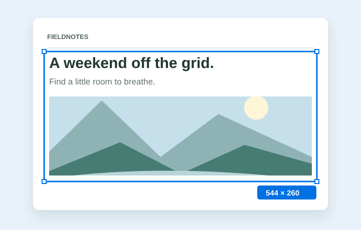
Area capture
Select just the part you need.
Capture, annotate, and share on Windows.
Everything you need, right where you need it.
One computer. One year of updates. Yours to keep.

A little context. A much clearer conversation.
A detail. A window. The whole story.

Select just the part you need.
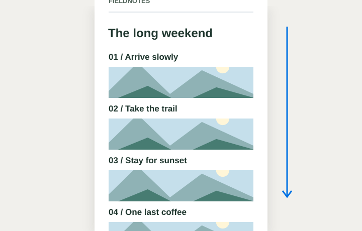
Bring a long page or conversation into one image.
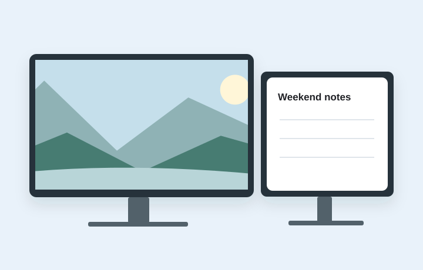
Capture a window, your current screen, or all displays.
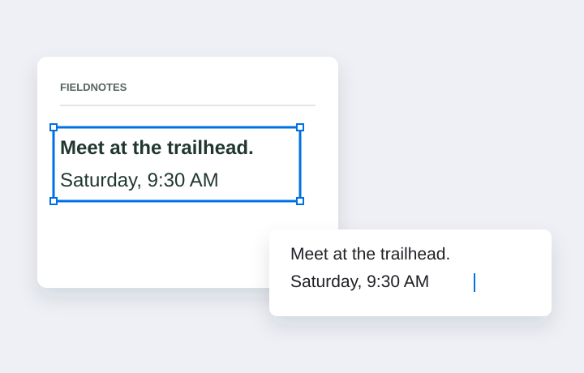
Turn text in an image into text you can copy.
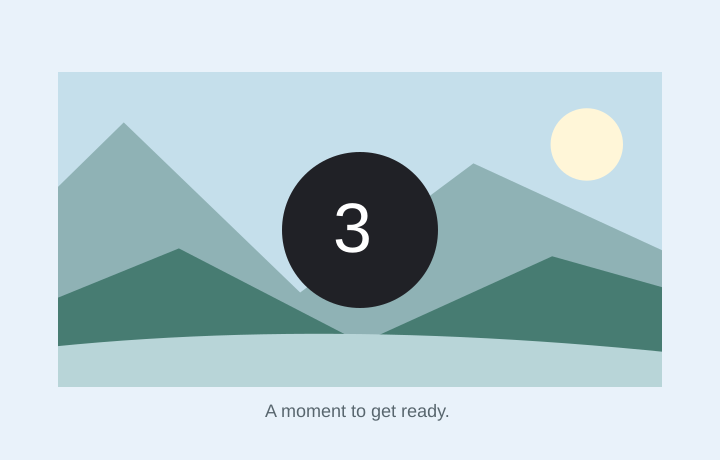
Give yourself a moment to get everything ready.
A few thoughtful marks can say more than a paragraph.
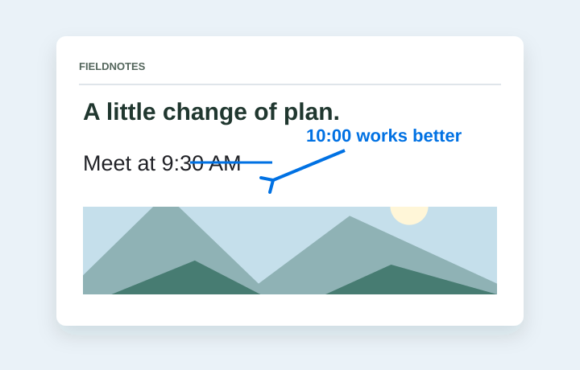
Add arrows, lines, shapes, freehand marks, and text.
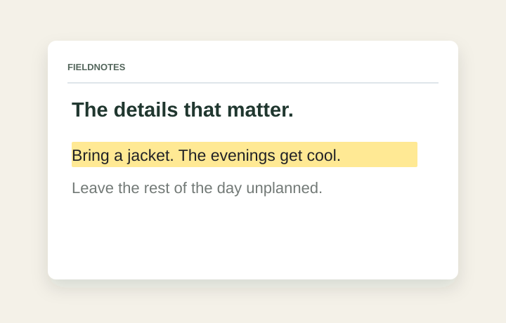
Draw attention to a sentence or a detail.
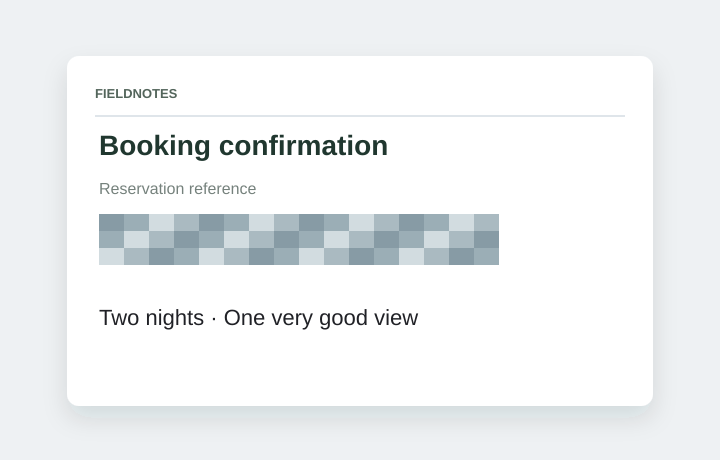
Hide sensitive details before sharing.
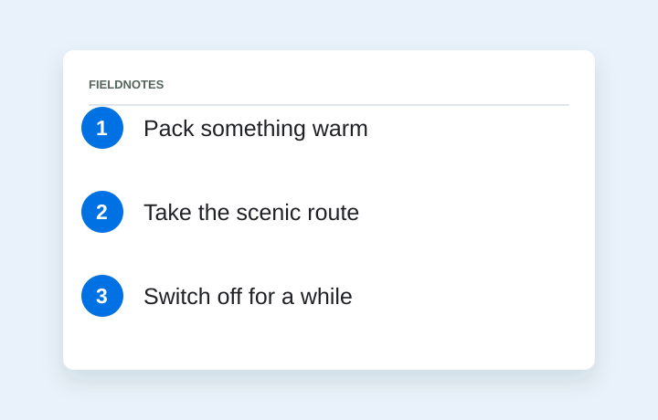
Make instructions easy to follow, one step at a time.
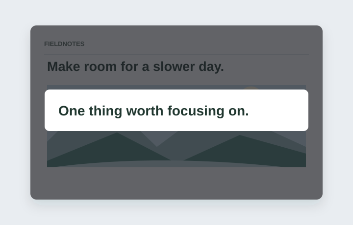
Keep attention on one part of your capture.
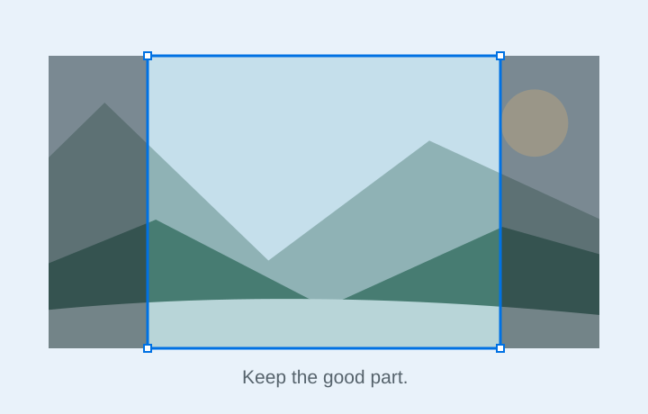
Leave out the distractions.
Keep useful captures close. Send the rest on their way.
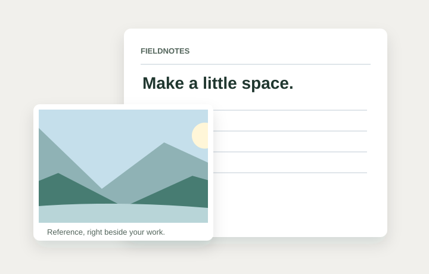
Keep a reference visible while you work in another window.
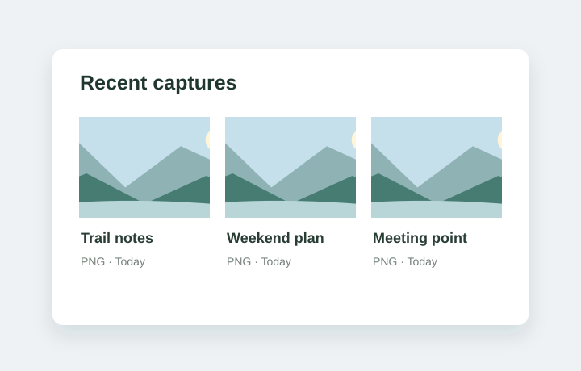
Find and reopen your recent image captures.
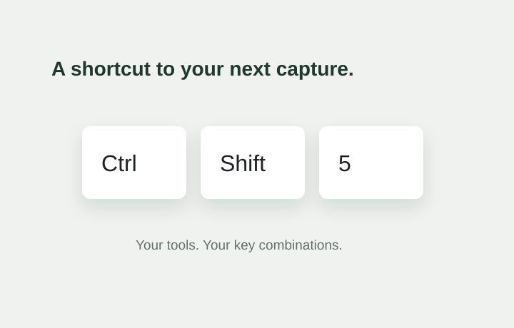
Choose the key combinations that work for you.
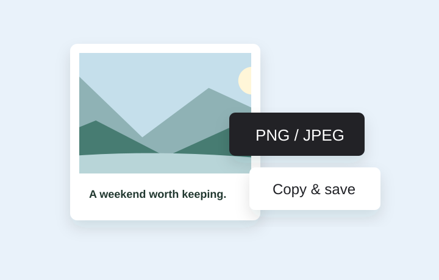
Copy to the clipboard, save PNG or JPEG, or drag into another app.
Illustrated feature examples. Actual controls and appearance may vary.
Explore all features →Give your screenshot a little breathing room. Add a background, round the corners, and keep the focus on what matters.

Your latest capture stays within reach. Copy it, open the editor, or pin it above your work.
Explore all features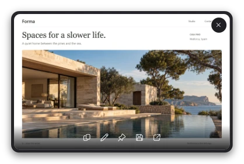
One purchase. A year of improvements.
Keep the versions you own.
$30
USD · one-time purchase
Purchases open when Stillmark launches.
Full purchase detailsYes. Versions released during your included update year stay yours to use. There is no subscription or automatic renewal.
Yes. Deactivate the old computer in your account, then sign in to Stillmark on your new one and choose “Activate this computer.” Your license covers one computer. An offline computer learns about deactivation at its next successful check; its existing offline access lasts at most 30 days.
Your captures and OCR are processed on your Windows computer. Save to a folder you choose, copy to your clipboard, or send to another app. A folder you choose may itself be cloud-synced.
Yes. Your 14-day trial starts when you first open the app. No account or payment card is required. After the trial, a valid license is required for capture and recording. The public download will open after final release checks are complete.